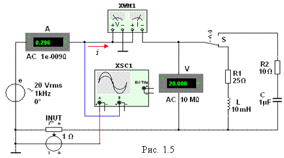

Задание 3. Измерить
индуктивность катушки и ёмкость конденсатора косвенным методом по результатам
прямых измерений напряжения, тока и мощности RL-
или RC-ветви и косвенного измерения угла
сдвига фаз φk.

С этой целью собрать на рабочем поле программы MS10 схему цепи (см. рис. 1.5), либо
открыть файл 1.5.ms10, и установить (или задать):
- параметры идеального источника
синусоидального напряжения действующее
значение ЭДС Е = 5 + N, В; частоту f = 1 кГц при
измерении индуктивности L катушки и частоту f = 10 кГц при измерении ёмкости C конденсатора;
начальную фазу напряжения Yu = 0;
- режим
работы АС (переменный
ток) амперметра А (RА = 1 нОм) и
вольтметра V (RV = 10 MОм);
- значение сопротивления R1 = 25 Ом резистора R1 (имитирующего активное
сопротивление катушки) и сопротивление R2 = 10 Ом резистора R2;
- значение индуктивности катушки L = 5 + int(N/5), мГн и
ёмкости конденсатора С
= 1 + int(N/10), мкФ, где int(a/b) – целая часть
операции a/b.
- красный цвет провода,
соединённого с каналом А,
и синий цвет провода, соединённого с каналом В двухканального
осциллографа ХSC1;
- задать параметры
осциллографа XSC1. При этом на вход канала А подано напряжение с источника INУT, пропорциональное входному току
i, а на вход
канала В подано напряжение u с зажимов источника
напряжения е. Цветовая окраска
осциллограмм (см. рис. 1.3, а)
соответствует установленным цветам проводов, соединённых с соответствующими
входами каналов прибора XSC1.
Примечание. В модели осциллографа XSC1 среды MS10 реализовано "внутреннее
соединение" правых входов каналов А и В (см. рис. 1.3, б и рис. 1.5) с узлом схемы цепи, к которому
подключен элемент ^, названный "Аналоговая
земля". Поэтому не обязательно
соединять проводниками правые выводы каналов А и В
осциллографа с "заземлённым" узлом схемы. Элемент ^ имеет нулевой потенциал. Потенциалы других узлов схемы измеряются
относительно заземлённого узла;
-
чувствительность 200 мВ/дел (mV/div) канала А осциллографа
и 5 или 10 B/дел (V/div) канала В; длительность развертки (TIME BASE) в режиме Y/T - 0,2 мс/дел (2 ms/div). При измерениях указанные цены делений рекомендуется изменять таким
образом, чтобы амплитуды напряжений были бы равны не менее 0,5…0,75 высоты
экрана осциллографа (в режиме Espand), а по оси времени укладывалось бы два-три периода колебания
напряжений;
- управляющую
переключателем клавишу S клавиатуры;
- значение
коэффициента передачи INUT k = 1 Ом;
- управляемый контакт переключателя
S
в нижнее положение, т. е. подключить R1L-ветвь к
источнику е.
Запустить программу MS10 (щёлкнуть мышью на кнопке меню среды MS10), снять показания
приборов и занести их в табл. 1.2 электронной тетради по работе.
Замечание. Методика определения
угла сдвига фаз j между напряжением
и током описана в п. 4 раздела "Теоретические
сведения …".
Убедиться (см. рис. 1.3, а), что ток i1 в R1L-ветви отстаёт по фазе от напряжения u на угол j1 = arctg(XL/R1) = arсcos(P1/UI1), где Р1 - показание
ваттметра. Скопировать и занести на страницу электронной тетради копию рисунка-чертёжа
смоделированной схемы (см. рис. 1.5) с показаниями ваттметра и осциллограммами
на экране осциллографа (см. рис. 1.3).
Установить частоту ЭДС f = 10 кГц источника е(t) и с помощью переключателя S подключить R2С-ветвь к источнику е. Показания приборов занести в табл. 1.2.
Убедиться (анализируя
расположение осциллограмм на экране осциллографа), что ток i2 в R2С-ветви опережает по фазе напряжение u на угол j2 = arctg(-XC/R2) = - arсcos(P2/UI2), где Р2 - показание
ваттметра.
Рассчитать полное Z = U/I, активное R = Zcosj и реактивное X = Zsinj сопротивления R1L- и R2С-ветвей и занести
их в табл. 1.2.
Так как индуктивное сопротивление
катушки XL = wL = 2pfL, Ом, а ёмкостное сопротивление конденсатора XС =
1/wС
= 1/2pfC, Ом, то:
- индуктивность
катушки, включенной в R1L-ветвь,
L = XL/w = XL/2pf, Гн или L = 103XL/2pf, мГн;
-
ёмкость конденсатора, включенного в R2С-ветвь,
С = 1/(wXC )= 1/(2pf×XC), Ф или С = 106/(2pf×XC), мкФ.
|
Ветвь |
Установлено |
Измерено |
Вычислено |
|||||||||
|
E, B |
f, кГц |
U, B |
I, мA |
P, Bт |
j, град |
Z, Ом |
R, Ом |
X, Ом |
L, мГн |
C, мкФ |
|
|
|
R1L |
|
1 |
|
|
|
|
|
|
|
|
----- |
|
|
R2C |
|
10 |
|
|
|
|
|
|
|
----- |
|
|
Вычисленные значения индуктивности L катушки и ёмкости C
конденсатора занести в табл. 1.2. Сравнить полученные значения R, L
и С с
установленными их значениями в схеме цепи.